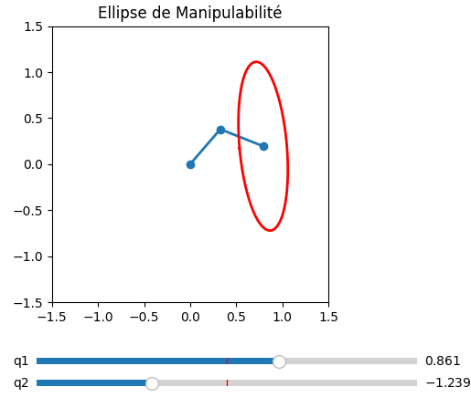
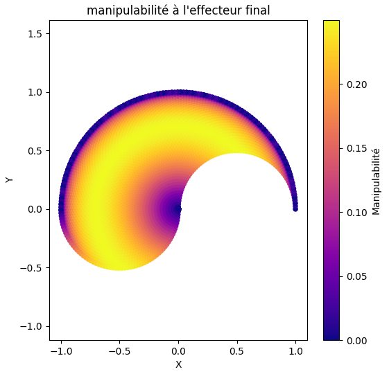

La jacobienne en robotique
Définition conceptuelle
Soit le vecteur des variables articulaires (positions articulaires) : \[ q = \begin{bmatrix} q_1 \\ q_2 \\ \vdots \\ q_n \end{bmatrix} \]
et la position (et orientation) du bout d'effecteur décrite par une fonction de configuration : \[ x = f(q) \]
La jacobienne \(J(q)\) est la matrice des dérivées partielles de \(f\) par rapport à \(q\) : \[ J(q) = \frac{\partial f(q)}{\partial q} \]
Elle linéarise localement la relation entre petites variations de configuration \(\delta q\) et petites variations de la sortie \(\delta x\) : \[ \delta x \approx J(q)\,\delta q. \] Cette propriété peut être utilisé pour son calcul dans certain algorithmes.
Relation vélocité
En prenant la dérivée temporelle on obtient la relation vitesse : \[ \dot x = J(q)\,\dot q. \]
Donc la jacobienne transforme les vitesses articulaires \(\dot q\) en vitesse linéaire et/ou angulaire du bout d'effecteur \(\dot x\).
Différents types de jacobienneOn rencontre habituellement deux notions qui portent le nom de « jacobienne » :
- Jacobienne analytique (ou différentielle)
La jacobienne analytique pour un robot, notée \( J_a(q) \), relie les vitesses articulaires aux dérivées des paramètres de position et d’orientation. Pour un vecteur articulaire allant de \( q_1 \) à \( q_n \), la jacobienne s’écrit :
\[ J_a(q)= \begin{bmatrix} \dfrac{\partial f_1}{\partial q_1} & \cdots & \dfrac{\partial f_1}{\partial q_n} \\[8pt] \vdots & \ddots & \vdots \\[8pt] \dfrac{\partial f_d}{\partial q_1} & \cdots & \dfrac{\partial f_d}{\partial q_n} \end{bmatrix} \]
Dans le contexte de la jacobienne analytique, chaque fonction \( f_i \) représente l’une des composantes de la fonction vectorielle \[ f(q) = \begin{bmatrix} f_1(q) \\[4pt] f_2(q) \\[4pt] \vdots \\[4pt] f_d(q) \end{bmatrix}, \] qui décrit l’état de l’effecteur en fonction des articulations \( q \). Ainsi :
- \( f_1(q) \) peut représenter la position \( x \), ou un paramètre d’orientation.
- \( f_2(q) \) peut représenter la position \( y \), ou un autre paramètre d’orientation.
- …
Une singularité d’un robot apparaît lorsque sa jacobienne devient non inversible. Pour une jacobienne carrée \( J(q) \) (par exemple pour un robot à \( n \) degrés de liberté et un espace opérationnel de dimension \( n \)) :
\[ \text{Singularite} \;\;\Longleftrightarrow\;\; \det(J(q)) = 0 \]
Cette méthode est aisé mais requiert un temps de calcul important (surtout pour les rotations pas obtenues directement dans les equations), de plus elle est mal adapté pour représenter les efforts articulaires. Pour cela on utilise l'autre méthode.
- Jacobienne géométrique (ou cinématique)
La jacobienne cinématique d’un robot permet d’exprimer la relation entre les vitesses articulaires \( \dot{q} \) et la vitesse de l’effecteur dans l’espace opérationnel.
\[ \begin{bmatrix} v \\ \omega \end{bmatrix} = J_g(q)\,\dot q, \]
Pour une articulation pivot (revolute en anglais):
On retrouve les expressions suivante :
\[ {}^{i-1}\!v_{i/i-1}\ \;=\; {}^{i-1}\!u_{i}\ \;\times\; {}^{\,i-1}\!M_{i}\,\vec{(O_iP_{/R_i})}\dot{q}_i \] Avec \({}^{\,i-1}M_{i} \) la matrice de passage entre la base i-1 et i.
Aussi \({}^{i-1}\!u_{i}\) est l'axe de rotation de l'articulation de la base i-1
Attention x est le produit vectoriel !
On a aussi :\[ {}^{i-1}\!\omega_{i/i-1} = {}^{i-1}\!u_{i}\,\dot{q}_i \]
Pour une articulation glissiere (prismatique en anglais):
On retrouve les expressions suivante :
\[ {}^{i-1}\!v_{i/i-1}\ \;=\; {}^{i-1}\!u_{i}\ \dot{q}_i \]
\[ {}^{i-1}\!\omega_{i/i-1}= 0 \]
Dans une jacobienne robotique, les trois premières lignes de la jacobienne analytique
Ja et de la jacobienne géométrique Jg sont
identiques car elles décrivent toutes deux la vitesse linéaire de l’effecteur.
Les trois lignes inférieures diffèrent ensuite : Jg exprime
directement la vitesse angulaire de l’effecteur, tandis que Ja
relie les vitesses articulaires aux dérivées des paramètres d’orientation (comme les
angles d’Euler), ce qui nécessite une matrice de transformation supplémentaire.
Calculer la jacobienne d'un robot 6 axes sur Python
import numpy as np
from MGI_MGD_seriel_6dof import MGD as MGD
np.set_printoptions(precision=4, suppress=True, floatmode='fixed')
def Jacobian_geometrical(q):
q = np.asarray(q, dtype=float)
def rot_z(theta):
c = np.cos(theta); s = np.sin(theta)
return np.array([
[ c, -s, 0, 0],
[ s, c, 0, 0],
[ 0, 0, 1, 0],
[ 0, 0, 0, 1]
])
def rot_y(theta):
c = np.cos(theta); s = np.sin(theta)
return np.array([
[ c, 0, s, 0],
[ 0, 1, 0, 0],
[-s, 0, c, 0],
[ 0, 0, 0, 1]
])
def trans_z(d):
T = np.eye(4)
T[2,3] = d
return T
T0 = T = np.eye(4)
# Matrices de transformation homogènes pour chaque lien
T01 = rot_z(q[0]) @ trans_z(0.317)
T12 = rot_y(q[1]) @ trans_z(0.45)
T02 = T01 @ T12
T23 = rot_y(q[2]) @ trans_z(0.48)
T03 = T02 @ T23
T34 = rot_z(q[3])
T04 = T03 @ T34
T45 = rot_y(q[4])
T05 = T04 @ T45
T56 = rot_z(q[5]) @ trans_z(0.07)
T06 = T05 @ T56
xf = T06[:3, 3]
Jc = np.zeros((6, 6))
position01 = T0[:3, 3]
U01 = T0[:3, 2] # Jw % equivaut a Zi-1 en fonction de la base
Jv01 = np.cross(U01, (xf - position01))
Jc[:3, 0] = Jv01
Jc[3:6, 0] = U01
position02 = T01[:3, 3]
U02 = T01[:3, 1] # Jw % equivaut a Yi-1 en fonction de la base
Jv02 = np.cross(U02, (xf - position02))
Jc[:3, 1] = Jv02
Jc[3:6, 1] = U02
position03 = T02[:3, 3]
U03 = T02[:3, 1] # Jw % equivaut a Yi-1 en fonction de la base
Jv03 = np.cross(U03, (xf - position03))
Jc[:3, 2] = Jv03
Jc[3:6, 2] = U03
position04 = T03[:3, 3]
U04 = T03[:3, 2] # Jw % equivaut a Zi-1 en fonction de la base
Jv04 = np.cross(U04, (xf - position04))
Jc[:3, 3] = Jv04
Jc[3:6, 3] = U04
position05 = T04[:3, 3]
U05 = T04[:3, 1] # Jw % equivaut a Yi-1 en fonction de la base
Jv05 = np.cross(U05, (xf - position05))
Jc[:3, 4] = Jv05
Jc[3:6, 4] = U05
position06 = T05[:3, 3]
U06 = T05[:3, 2] # Jw % equivaut a Zi-1 en fonction de la base
Jv06 = np.cross(U06, (xf - position06))
Jc[:3, 5] = Jv06
Jc[3:6, 5] = U06
return Jc
q_6dof = np.array([0, np.pi/2, 0 ,0, 0, 0])
J = Jacobian_geometrical(q_6dof)
print("Jacobian Geometric:\n", J)
Exemples de calcul pour une jacobienne analytique
Longueurs: \(l_1,l_2\). Angles articulaires: \(q_1,q_2\). La position du bout d'effecteur : \[ x = l_1\cos q_1 + l_2\cos(q_1+q_2),\qquad y = l_1\sin q_1 + l_2\sin(q_1+q_2). \]
La jacobienne (relatif aux composantes \(x,y\)) est : \[ J(q)=\begin{bmatrix} \dfrac{\partial x}{\partial q_1} & \dfrac{\partial x}{\partial q_2} \\[6pt] \dfrac{\partial y}{\partial q_1} & \dfrac{\partial y}{\partial q_2} \end{bmatrix}= \begin{bmatrix} -l_1\sin q_1 - l_2\sin(q_1+q_2) & -l_2\sin(q_1+q_2) \\[6pt] l_1\cos q_1 + l_2\cos(q_1+q_2) & \; l_2\cos(q_1+q_2) \end{bmatrix}. \]
Relation vitesse : \[ \begin{bmatrix}\dot x \\ \dot y\end{bmatrix}=J(q)\begin{bmatrix}\dot q_1 \\ \dot q_2\end{bmatrix}. \]
La condition de singularité (perte d'un degré de liberté) se produit quand \(\det J(q)=0\). Pour ce cas 2R :
\[ \det J(q)=l_1 l_2 \sin q_2. \]
Donc la singularité se produit lorsque \(\sin q_2 = 0\), i.e. \(q_2=0\) ou \(q_2=\pi\) (bras tendu ou replié).
Usages
- Cinématique inverse en vitesse :
Pour obtenir \(\dot q\) à partir d'une vitesse souhaitée \(\dot x\) on résout \(\dot q = J^{-1}(q)\dot x\) (si la matrice est carré et est inversible) ou on utilise la pseudo-inverse \(J^{\dagger}\) : \[ \dot q = J^{\dagger}\dot x. \] avec : \[ J^{\dagger}(q) =\bigl(J(q)\,J^{T}(q)\bigr)^{-1} J^{T}(q)\ \]
- Transfert de forces :
Si une force/torque externe est appliquée au bout d'effecteur \(F\), les couples articulaires nécéssaire pour que le robot ne bouge pas équivaut (avec le théorème des puissances virtuelle) à : \[ \tau = J(q)^T F. \] A l'instar si on souhaite que le robot applique une force \(F\)
-
Calcul des couples pour equilibre statique
Pour cela on calcul autant de jacobienne qu'il y a d'articulation dans le robot tel que une case de ces matrices équivaut à : \[ J_{i,j}^{CI}\ = \begin{bmatrix} v_i \end{bmatrix} = \begin{bmatrix} {}^{i-1} \mathbf{u}_i \times (x_{i}^{f} - pos_{j} ) \end{bmatrix} \] Avec \( x_{i}^{f} \) la position dans l'espace de la \((n+1)-i^{eme} \) articulation avec \( n \) le nombre d'articulation totale
et \(pos_{j} \) la position dans l'espace à la base de la \(j^{eme} \) articulationAttention cependant on pose \(J_{i,j}^{CI}\) = 0 si \((x_{i}^{f} - pos_{j}\)) < 0
Ensuite on utilise que : \[\Gamma_m^{i} = J_{CI_i,j}^{\mathrm{T}} \, \tau_i \] avec \(\tau_i \) = \begin{bmatrix} 0 \\ 0 \\ m_i g \end{bmatrix}
Chaque ligne de \(\Gamma_m \) représente le coup en couple d'une articulation.
On obtient alors une matrice de taille \( n \) x \( n \) et il ne reste plus qu'a sommer ses colonnes pour avoir les couples nécéssaire à l'équilibre statique \( Q \).Calcul l'equilibre statique d'un 6 axes sur Python
import numpy as np np.set_printoptions(precision=4, suppress=True, floatmode='fixed') def equilibrageStatique(q): g = -10 # arrondis de 9.81 pour faciliter la lecture masse = np.array([1,1,1,1,1,1]) # en kg #la force de la gravité appliqué sur les articulation tau_i = np.array([ [0, 0, 0, 0, 0, 0], [0, 0, 0, 0, 0, 0], [masse[0] * g, masse[1] * g, masse[2] * g, masse[3] * g, masse[4] * g, masse[5] * g] ]) l = np.array([1,1,1,0,0,1]) # longueur des articulation # centre de gravité lI= np.array([l[0]/2,l[1]/2,l[2]/2,l[3]/2,l[4]/2,l[5]/2]) def rot_z(theta): c = np.cos(theta); s = np.sin(theta) return np.array([ [ c, -s, 0, 0], [ s, c, 0, 0], [ 0, 0, 1, 0], [ 0, 0, 0, 1] ]) def rot_y(theta): c = np.cos(theta); s = np.sin(theta) return np.array([ [ c, 0, s, 0], [ 0, 1, 0, 0], [-s, 0, c, 0], [ 0, 0, 0, 1] ]) def trans_z(d): T = np.eye(4) T[2,3] = d return T # matrice de la base T0 = np.eye(4) # Matrices de transformation homogènes pour chaque lien T01 = rot_z(q[0]) @ trans_z(l[0]) T01_CI = rot_z(q[0]) @ trans_z(lI[0]) T12 = rot_y(q[1]) @ trans_z(l[1]) T02 = T01 @ T12 T12_CI = rot_y(q[1]) @ trans_z(lI[1]) T02_CI = T01 @ T12_CI T23 = rot_y(q[2]) @ trans_z(l[2]) T03 = T02 @ T23 T23_CI = rot_y(q[2]) @ trans_z(lI[2]) T03_CI = T02 @ T23_CI T34 = rot_z(q[3]) T04 = T03 @ T34 T04_CI = T03 @ T34 T45 = rot_y(q[4]) T05 = T04 @ T45 T05_CI = T04 @ T45 T56 = rot_z(q[5]) @ trans_z(l[5]) T06 = T05 @ T56 T56_CI = rot_z(q[5]) @ trans_z(lI[5]) T06_CI = T05 @ T56_CI axes = [T0[:3,2], T01[:3,1], T02[:3,1], T03[:3,2], T04[:3,1], T05[:3,2]] # tourne autour de respectivement : z-y-y-z-y-z en fonction de la base # ----------------------------- # CALCUL DES JACOBIENNES # ----------------------------- # 1ère JCI xf = T06_CI[:3, 3] position01 = T0[:3, 3] Jc01 = np.cross(axes[0], (xf - position01)) # une colonne de la jacobienne position02 = T01[:3, 3] Jc02 = np.cross(axes[1], (xf - position02)) position03 = T02[:3, 3] Jc03 = np.cross(axes[2], (xf - position03)) position04 = T03[:3, 3] Jc04 = np.cross(axes[3], (xf - position04)) position05 = T04[:3, 3] Jc05 = np.cross(axes[4], (xf - position05)) position06 = T05[:3, 3] Jc06 = np.cross(axes[5], (xf - position06)) J_CI_1 = np.column_stack((Jc01, Jc02, Jc03, Jc04, Jc05, Jc06)) # la 1ere jacobienne final # 2eme JCI xf = T05_CI[:3, 3] position01 = T0[:3, 3] Jc01 = np.cross(axes[0], (xf - position01)) position02 = T01[:3, 3] Jc02 = np.cross(axes[1], (xf - position02)) position03 = T02[:3, 3] Jc03 = np.cross(axes[2], (xf - position03)) position04 = T03[:3, 3] Jc04 = np.cross(axes[3], (xf - position04)) position05 = T04[:3, 3] Jc05 = np.cross(axes[4], (xf - position05)) Jc06 = np.zeros(3) # (xf - position05) < 0 --> donc zero J_CI_2 = np.column_stack((Jc01, Jc02, Jc03, Jc04, Jc05, Jc06)) # 3eme JCI xf = T04_CI[:3, 3] position01 = T0[:3, 3] Jc01 = np.cross(axes[0], (xf - position01)) position02 = T01[:3, 3] Jc02 = np.cross(axes[1], (xf - position02)) position03 = T02[:3, 3] Jc03 = np.cross(axes[2], (xf - position03)) position04 = T03[:3, 3] Jc04 = np.cross(axes[3], (xf - position04)) Jc05 = np.zeros(3) Jc06 = np.zeros(3) J_CI_3 = np.column_stack((Jc01, Jc02, Jc03, Jc04, Jc05, Jc06)) # 4eme JCI xf = T03_CI[:3, 3] position01 = T0[:3, 3] Jc01 = np.cross(axes[0], (xf - position01)) position02 = T01[:3, 3] Jc02 = np.cross(axes[1], (xf - position02)) position03 = T02[:3, 3] Jc03 = np.cross(axes[2], (xf - position03)) Jc04 = np.zeros(3) Jc05 = np.zeros(3) Jc06 = np.zeros(3) J_CI_4 = np.column_stack((Jc01, Jc02, Jc03, Jc04, Jc05, Jc06)) # 5eme JCI xf = T02_CI[:3, 3] position01 = T0[:3, 3] Jc01 = np.cross(axes[0], (xf - position01)) position02 = T01[:3, 3] Jc02 = np.cross(axes[1], (xf - position02)) Jc03 = np.zeros(3) Jc04 = np.zeros(3) Jc05 = np.zeros(3) Jc06 = np.zeros(3) J_CI_5 = np.column_stack((Jc01, Jc02, Jc03, Jc04, Jc05, Jc06)) # 6eme JCI xf = T01_CI[:3, 3] position01 = T0[:3, 3] Jc01 = np.cross(axes[0], (xf - position01)) Jc02 = np.zeros(3) Jc03 = np.zeros(3) Jc04 = np.zeros(3) Jc05 = np.zeros(3) Jc06 = np.zeros(3) J_CI_6 = np.column_stack((Jc01, Jc02, Jc03, Jc04, Jc05, Jc06)) # CALCUL DES COUPLES Gamma_m = np.zeros((6,6)) Gamma_m[0, :] = J_CI_1.T @ tau_i[:, 0] Gamma_m[1, :] = J_CI_2.T @ tau_i[:, 1] Gamma_m[2, :] = J_CI_3.T @ tau_i[:, 2] Gamma_m[3, :] = J_CI_4.T @ tau_i[:, 3] Gamma_m[4, :] = J_CI_5.T @ tau_i[:, 4] Gamma_m[5, :] = J_CI_6.T @ tau_i[:, 5] #print("gamma = ",Gamma_m) Qq = np.sum(Gamma_m, axis=0) # Somme des coups #print(Qq) return Qq # Configuration 1 : bras tout droit q1 = np.array([0, 0, 0, 0, 0, 0]) Q1 = equilibrageStatique(q1) # Configuration 2 : articulation 2 à 90° q2 = np.array([0, np.pi/2, 0, 0, 0, 0]) Q2 = equilibrageStatique(q2) # Configuration 3 : articulation 3 à 90° q3 = np.array([0, 0, np.pi/2, 0, 0, 0]) Q3 = equilibrageStatique(q3) # Configuration 4 : articulation 2 et 3 à 45° q4 = np.array([0, np.pi/4, np.pi/4, 0, 0, 0]) Q4 = equilibrageStatique(q4) # Configuration 5 : articulation 5 à 90° q5 = np.array([0, 0, 0, 0, np.pi/2, 0]) Q5 = equilibrageStatique(q5) print("Q1 =", Q1) print("Q2 =", Q2) print("Q3 =", Q3) print("Q4 =", Q4) print("Q5 =", Q5) -
Evaluation automatique du centre d'inertie d'une pièce :
- On place le robot dans une position P et on mesure le couple d'equilibre statique \( \Gamma_m \)
- On prend la pièce dans une préhenseur et reviens à P, on mesure \( \Gamma_m \)'
Donc \( \Gamma_e = \Gamma_m' - \Gamma_m = J(q)^T F \).Avec : \[ F = \begin{bmatrix} 0 \\ 0 \\ mg \\ \vec{PG} \times mg \end{bmatrix} \]
Ainsi on a 6 équations pour 4 inconnues (\(m\) et les coordonnees de \(\vec{PG})\)
- Analyse de manipulabilité :
On peut mesurer la capacité d'un robot à produire des vitesses dans différentes directions via des fonctions de la jacobienne.
On calcul \(A=(JJ^T)\).
Cela permet de visualiser l'ellipsoïde de manipulabilité avec :\(\lambda_i =\) les valeurs propres de \(A\) et la direction de la vitesse \(\vec{v}_i =\) les vecteurs propres de \(A\).
> On utilise aussi pour avoir une mesure en un seul chiffre le volume de cette ellipsoid de manipulabilité (mesure de Yoshikawa), \(Volume=\sqrt{\det(A)}\).
Au-delà de la troisième dimension, cette notion perd en grande partie son sens physique et doit donc être interprétée avec précaution.Si on calcul \(A=(JJ^T)^{-1} \), alors on a les même calcul mais pour l'ellipsoide de force !
visualisation de l'ellipsoïde de manipulabilité
Calcul et visualisation ellipsoide de manipulabilité pour un 2 axes
import numpy as np import matplotlib.pyplot as plt from matplotlib.widgets import Slider # ----------------------------- # Parametres # ----------------------------- l = np.array([0.5, 0.5]) def forward_kinematics(q): # MGD mais avec les formules directement #Return joint positions p0, p1, p2 (2D). q1, q2 = q p0 = np.array([0, 0]) p1 = np.array([l[0] * np.cos(q1), l[0] * np.sin(q1)]) p2 = p1 + np.array([l[1] * np.cos(q1+q2), l[1] * np.sin(q1+q2)]) return p0, p1, p2 def jacobian(q): #Jacobienne analytique (avec les dérivés de p2 donc) q1, q2 = q J = np.array([ [-l[0]*np.sin(q1) - l[1]*np.sin(q1+q2), -l[1]*np.sin(q1+q2)], [ l[0]*np.cos(q1) + l[1]*np.cos(q1+q2), l[1]*np.cos(q1+q2)] ]) return J def ellipse_points(A, center): #extraction des axes et direction de l"ellipsoid e_vals, e_vecs = np.linalg.eig(A) a = np.sqrt(e_vals[0]) b = np.sqrt(e_vals[1]) # ellipsoid t = np.linspace(0, 2*np.pi, 200) x = a * np.cos(t) y = b * np.sin(t) # rotate ellipsoid ellipse = e_vecs @ np.vstack((x, y)) x_ell, y_ell = ellipse[0], ellipse[1] # bouge le centre a l'effecteur final x_ell += center[0] y_ell += center[1] return x_ell, y_ell # ----------------------------- # Q initial # ----------------------------- q = np.array([0.0, 0.0]) # Plot fig, ax = plt.subplots() plt.subplots_adjust(bottom=0.25) robot_line, = ax.plot([], [], '-o', lw=2) ellipse_line, = ax.plot([], [], 'r-', lw=2) ax.set_xlim(-1.5, 1.5) ax.set_ylim(-1.5, 1.5) ax.set_aspect("equal") ax.set_title("Ellipse de Manipulabilité") # ----------------------------- # Update function # ----------------------------- def update(val): q1 = slider_q1.val q2 = slider_q2.val q = np.array([q1, q2]) # MGD p0, p1, p2 = forward_kinematics(q) xs = [p0[0], p1[0], p2[0]] ys = [p0[1], p1[1], p2[1]] robot_line.set_xdata(xs) robot_line.set_ydata(ys) # Calcul Jacobian + ellipsoid J = jacobian(q) A = J @ J.T x_ell, y_ell = ellipse_points(A, p2) ellipse_line.set_xdata(x_ell) ellipse_line.set_ydata(y_ell) fig.canvas.draw_idle() # ----------------------------- # Sliders # ----------------------------- ax_q1 = plt.axes([0.25, 0.1, 0.65, 0.03]) ax_q2 = plt.axes([0.25, 0.05, 0.65, 0.03]) slider_q1 = Slider(ax_q1, 'q1', -np.pi, np.pi, valinit=q[0]) slider_q2 = Slider(ax_q2, 'q2', -np.pi, np.pi, valinit=q[1]) slider_q1.on_changed(update) slider_q2.on_changed(update) #initialise le plot update(None) plt.show()

Scatteur manipulabilité de Yoshikawa pour un 2 axes
Calcul de manipulabilité pour un 2 axes
import numpy as np import matplotlib.pyplot as plt np.set_printoptions(precision=4, suppress=True, floatmode='fixed') def Manipulability(q): l = [0.5, 0.5] #longueur articulation p0 = np.array([0, 0]) p1 = np.array([l[0] * np.cos(q[0]), l[0] * np.sin(q[0])]) p2 = p1 + np.array([l[1] * np.cos(q[0]+q[1]), l[1] * np.sin(q[0]+q[1])]) # ----------------------------- # Calcul Jacobienne analytique # ----------------------------- #si jamais vous voulez testez pour bien verif que les 3ere lignes sont pareil J_a = np.array([[-l[0]*np.sin(q[0])-l[1]*np.sin(q[0]+q[1]), -l[1]*np.sin(q[0]+q[1])], [ l[0]*np.cos(q[0])+l[1]*np.cos(q[0]+q[1]), l[1]*np.cos(q[0]+q[1])] ]) # ----------------------------- # Calcul Jacobienne géométrique # ----------------------------- J_g = np.zeros((3, 2)) # position de l'effecteur finam xf = p2 # --- articulation 1 -------------------------------------- position01 = p0 U01 = np.array([0,0,1]) Jv01 = np.cross(U01, xf - position01) J_g[:, 0] = Jv01 # --- articulation 2 -------------------------------------- position02 = p1 U02 = np.array([0,0,1]) Jv02 = np.cross(U02, xf - position02) J_g[:, 1] = Jv02 J_g = J_g[:2,:] # pour avoir un jacobienne carré comme Z n'a pas d'influence ici Mani = np.sqrt(np.linalg.det(J_g @ J_g.T)) # calcul de la manipulabilité return Mani,xf[:2] points = [] manip_values = [] step = 0.05 s1_values = np.arange(0, np.pi+step, step) s2_values = np.arange(0, np.pi+step, step) # on explore tout l'espace for s1 in s1_values: for s2 in s2_values: manip, xf = Manipulability ([s1, s2]) points.append(xf) manip_values.append(manip) points = np.array(points) manip_values = np.array(manip_values) # ----------------------------- # DESSINE LE ROBOT # ----------------------------- plt.figure(figsize=(6,6)) sc = plt.scatter(points[:,0], points[:,1], c=manip_values, cmap='plasma', s=20) plt.colorbar(sc, label='Manipulabilité') plt.xlabel("X") plt.ylabel("Y") plt.title("manipulabilité à l'effecteur final") plt.axis('equal') plt.show()